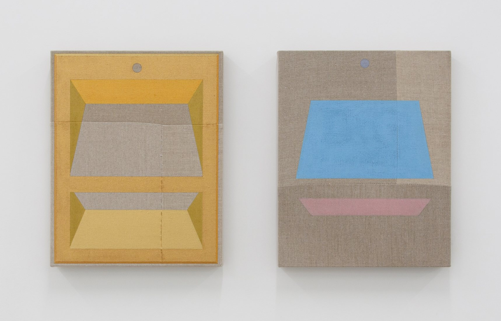
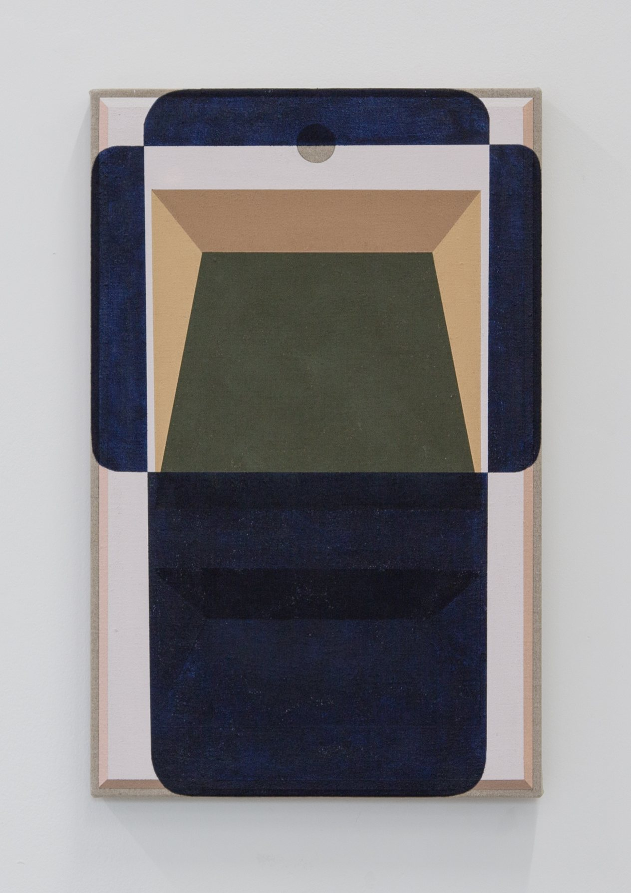
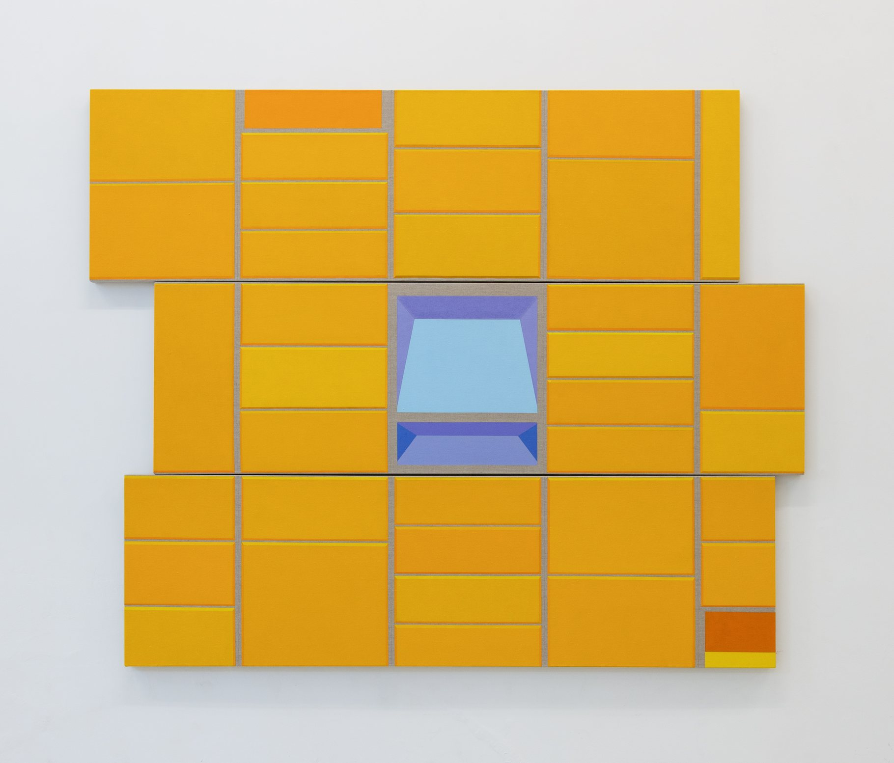
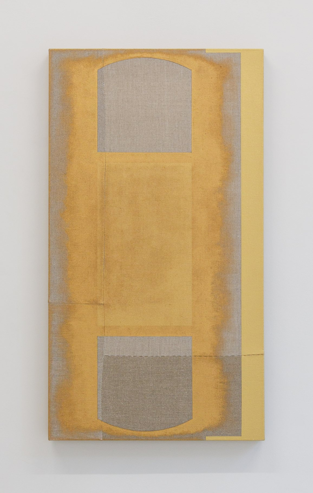
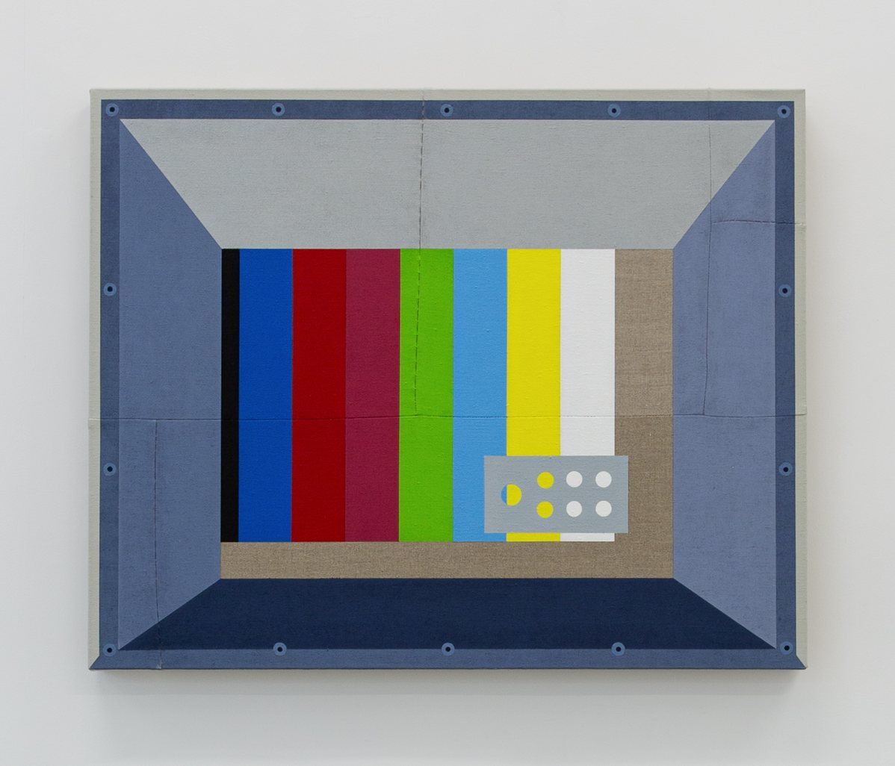

A group exhibition of new and recent work by Seungjo Jeong, Mizuki Tanahara and Ania Tomaszewska-Nelson. Its title comes from Jonathan Crary’s book 24/7: Late Capitalism and the End of Sleep.




